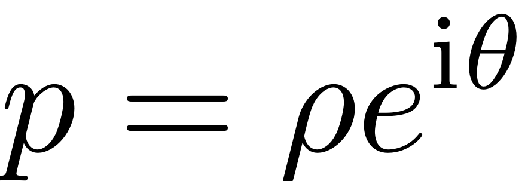
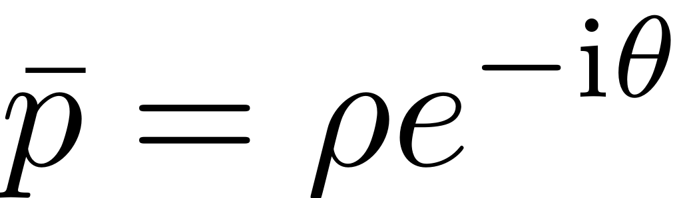
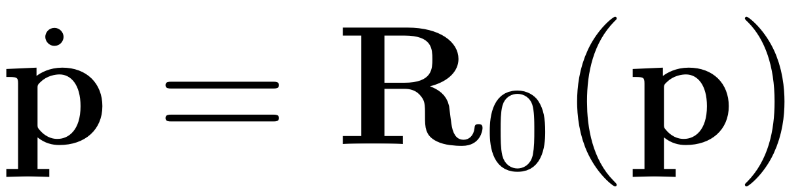
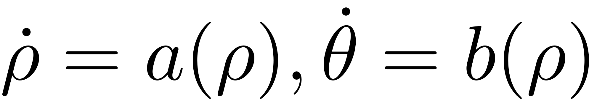
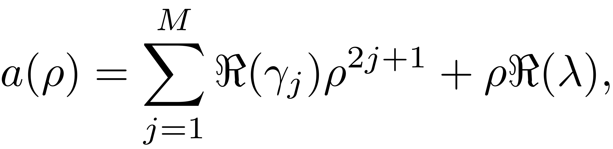
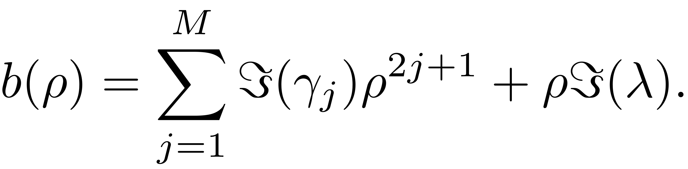
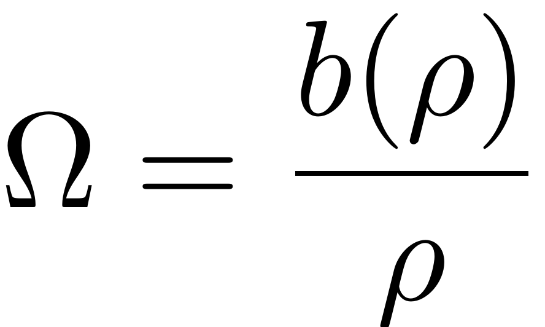

EXTRACT_BACKBONE
Contents
function BB = extract_backbone(obj, modes, omegaRange, order, varargin)
Extract backbone
This function extracts the Backbone Curves in polar coordinates. For two-dimensional SSMs, we use the normal form of paramaterization, where we choose the following form of autonomous reduced dynamics as
![$$\mathbf{R}_{0}(\mathbf{p})=\left[\begin{array}{c}\lambda p\\\bar{\lambda}\bar{p}\end{array}\right]+\sum_{j=1}^{M}\left[\begin{array}{c}\gamma_{j}p^{j+1}\bar{p}^{j}\\\bar{\gamma}_{j}p^{j}\bar{p}^{j+1}\end{array}\right],$$](extract_backbone_eq08701743399208904152-Rescaled.png)
Subsitution of  and  to  yields

where


It follows that the backbone curves in polar coordinates is given by .
The range of rho is determined by quadratic approximation of backbone curve if varargin is empty. Otherwise, it is specified via varargin.
f1 = figure('Name','Norm'); if isnumeric(obj.FRCOptions.outdof) f2 = figure('Name',['Amplitude at DOFs ' num2str(obj.FRCOptions.outdof(:)')]); else f2 = figure('Name','Amplitude at DOFs'); end figs = [f1, f2]; colors = get(0,'defaultaxescolororder'); assert(numel(modes)==2,'The analytic backbone computation can only be performed for a two-dimensional SSM/LSM') % get options [nt, nRho, nOmega, rhoScale, outdof, saveIC] = ... deal(obj.FRCOptions.nt, obj.FRCOptions.nRho, ... obj.FRCOptions.nPar, obj.FRCOptions.rhoScale, ... obj.FRCOptions.outdof, obj.FRCOptions.saveIC);
Setup
startBB = tic; obj.choose_E(modes); lambda = obj.E.spectrum(1); % some checks assert(~isreal(lambda),'The eigenvalues associated to the modal subspace must be complex for analytic backbone computation') omega0 = abs(imag(lambda)); assert(prod([omega0-omegaRange(1),omega0-omegaRange(end)])<0,'The supplied omegaRange must contain the natural frequency associated to the modes')
Loop over orders
norders = numel(order);
for k=1:norders
Compute autonomous SSM coefficients
[W0,R0] = obj.compute_whisker(order(k)); gamma = compute_gamma(R0);
Compute backbone
if numel(varargin)==0 rho = compute_rho_grid(omegaRange,nOmega,rhoScale,gamma,lambda,nRho); else rhomax = varargin{1}; rho = linspace(0.001*rhomax,rhomax,nRho); end [~,b] = frc_ab(rho, 0, gamma, lambda); omega = b./rho; idx = [find(omega<omegaRange(1)) find(omega>omegaRange(2))]; rho(idx) = []; omega(idx) = [];
Backbone curves in Physical Coordinates
stability = true(size(rho)); psi = zeros(size(rho)); epsilon = 0;
BB = compute_output_polar2D(rho,psi,stability,epsilon,omega,W0,[],1,nt, saveIC, outdof);
Plotting
plot_FRC(BB,outdof,order(k),'freq','lines',figs,colors(k,:));
end totalComputationTime = toc(startBB); disp(['Total time spent on backbone curve computation = ' datestr(datenum(0,0,0,0,0,totalComputationTime),'HH:MM:SS')])
end
Compute grid
function rho = compute_rho_grid(omegaRange,nOmega,rhoScale,gamma,lambda,nRho)
omega = linspace(omegaRange(1),omegaRange(end), nOmega);
Explicit quadratic approximation of the backbone curve

rho_bb = real(sqrt((omega - imag(lambda))/imag(gamma(1))));
rhomax = rhoScale * max(rho_bb);
rho = (rhomax/nRho) * (1:nRho);
end